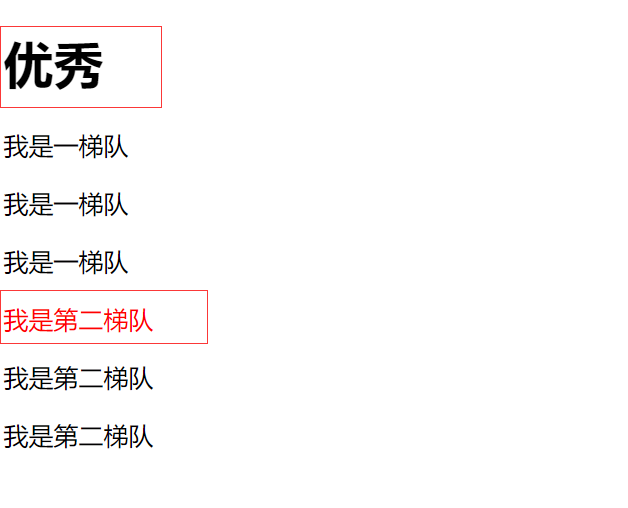
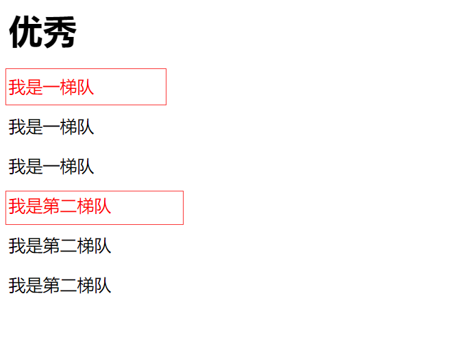

原文出处:本文由博客园博主心悦君兮君不知-睿提供。
原文连接:https://www.cnblogs.com/ruigege0000/p/11161375.html
原文连接:https://www.cnblogs.com/ruigege0000/p/11161375.html
解释CSS3 中新增的选择器中最具有代表性的就是序选择器，大致可以分为两类：
（1）同级别的第几个（2）同类型的第几个
先写一个公共代码
<body>
<h1>优秀</h1>
<p>我是一梯队</p>
<p>我是一梯队</p>
<p>我是一梯队</p>
<div>
<p>我是第二梯队</p>
<p>我是第二梯队</p>
<p>我是第二梯队</p>
</div>
</body>
1.选中同级别中的第一个
标签：first-child｛属性：值｝
注意点：不区分类型，只管取第一个，不管第一个是什么标签
p:first-child{
color:red;
}

解释：在同级别中只选取第一个为h1标签和div下的p标签，然后在这些里面只选p标签，进行标红。
2.选中同级别中同类型的第一个
标签：first-of-type{属性：值；}
例子：
p:first-of-type{
color:red;
}
解释：先选出所有的p标签，然后在这些p标签中每一个同级别的在选出一个。
3.选中同级别中的最后一个
标签：last-child{属性：值；｝
4.选中同级别中同类型的最后一个
标签：last-of-type{属性：值；}
5.选中同级别中的第n个
标签：nth-chirld（n）:{属性：值；｝
6.选中同级别中同类型的第n个
标签：nth-of-type(n):{属性：值；｝
7.选中同级别中的倒数第n个
标签：nth-last-chirld（n）:{属性：值；｝
8.选中同级别中同类型的倒数第n个
标签：nth-last-of-type(n):{属性：值；｝
二、源码：d77_order_selector_first
地址:
https://github.com/ruigege66/HTML_learning/blob/master/d77_order_selector_first
2.CSDN：https://blog.csdn.net/weixin_44630050（心悦君兮君不知-睿）
3.博客园：https://www.cnblogs.com/ruigege0000/
4.欢迎关注微信公众号：傅里叶变换，后台回复“礼包”获取Java大数据学习视频礼包